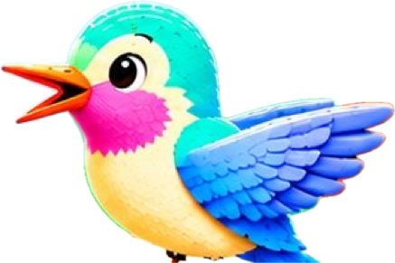
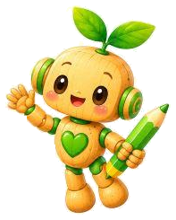
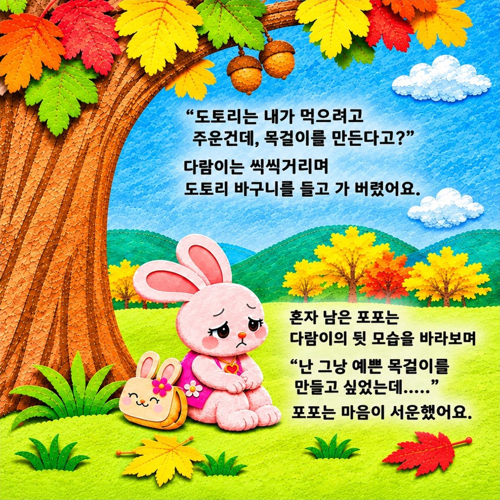

아이의 마음을 그림으로
그림 속 이야기를 부모와 함께


루미와 토리가 아이를 부를 때 쓰는 이름이에요. 별명도 괜찮고, 비워 두면 이름 없이 이야기해요.
보호자 안내 · 적은 내용은 저장하거나 보내지 않습니다
시연용 화면입니다. 적은 내용과 사진, 목소리는 이 기기에서만 잠깐 보이거나 들릴 뿐 어디에도 저장하거나 보내지 않습니다. 새로고침하면 모두 지워집니다.
AI 대화 기능 시연 예시
질문이 미리 정해 둔 순서대로 나오는 화면입니다. 실시간 AI는 연결되어 있지 않고, 캐릭터 목소리는 미리 만들어 둔 음성입니다.
루미와 이야기

아이의 말을 그대로 받아 적거나 목소리로 남겨 주셔도 됩니다.
카메라로 그림을 비추면 캐릭터가 나타나는 실제 AR입니다. 그림책 어느 쪽을 비춰도 그 쪽 캐릭터가 나타나요.
AI 대화 기능 시연 예시
질문이 미리 정해 둔 순서대로 나오는 화면입니다. 실시간 AI는 연결되어 있지 않고, 캐릭터 목소리는 미리 만들어 둔 음성입니다.
토리와 마음색 고르기
색을 눌러 봐. 여러 개 골라도 돼.
아이의 말을 그대로 받아 적거나 목소리로 남겨 주셔도 됩니다.
AI 대화 기능 시연 예시
질문이 미리 정해 둔 순서대로 나오는 화면입니다. 실시간 AI는 연결되어 있지 않고, 캐릭터 목소리는 미리 만들어 둔 음성입니다.
마음그림 올리기
네 마음을 그림으로 그려 볼까?하트를 칠해도 좋고, 그리고 싶은 모습을 그려도 좋아.
사진은 이 화면에서만 보이고 어디로도 보내지 않습니다.
그림 속에 누가 있니?
안 적어도 괜찮아. 목소리로 들려줘도 돼.
이 그림에 제목을 붙여 볼까?
오늘의 마음그림
아이가 고른 색
아이가 고른 색을 그대로 보여 드립니다. 색마다 정해진 뜻은 없으니 왜 골랐는지는 아이의 말로 들어 주세요.
아이가 한 말
공감 대화 TIP
- 감정 인정하기아이가 한 말을 그대로 받아서 마음을 짚어 주세요.예) “동생이 장난감을 가져가서 속상했구나.”
- 바라는 도움 묻기그때 어떤 도움을 바랐는지 물어봐 주세요.예) “그때 엄마가 어떻게 해 주었으면 좋았을까?”
- 함께 해결 방법 찾기다음에 비슷한 일이 생기면 어떻게 할지 함께 정해 보세요.예) “다음에 또 그러면 어떻게 하면 좋을까? 같이 생각해 보자.”
아이가 바로 대답하지 않으면 기다려 주시거나 다음에 다시 물어보셔도 됩니다. 이야기를 마칠 때는 “네 마음을 이야기해 줘서 고마워.”라고 말해 주세요.